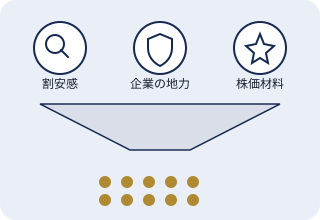

QUARTERLY STOCK PICKS
プロ投資家が四半期ごとに厳選する
10銘柄をチェックできるサービス
「旬の厳選10銘柄」は、投資歴50年超の藤ノ井俊樹氏が「割安感」「企業の地力」「株価材料」という3つの視点から10銘柄を選び、選定理由や売買戦略とあわせて紹介する株式情報サービスです。2013年5月から続いています。
公式サイトで詳しく見る※本ページは広告（アフィリエイトリンク）を含みます。当サイト（NAO WEB LAB）が独自に作成した紹介ページであり、サービスの運営会社ではありません。
AT A GLANCE
サービスの基本情報
サービス提供開始時期（公式サイトより）
発行頻度（新春・春・夏・秋の年4回）
1号あたりの紹介銘柄数
こんなお悩み、ありませんか？
- 気になる個別株をどう選べばいいか分からない
- 銘柄の情報収集に多くの時間を割けない
- 経験豊富な投資家がどんな視点で銘柄を見ているのか知りたい
- 四半期ごとに新しい切り口で銘柄をチェックしたい
そんな方に知っていただきたいのが、投資歴50年超の藤ノ井俊樹氏が四半期ごとに10銘柄を厳選して紹介する「旬の厳選10銘柄」です。
ABOUT
「旬の厳選10銘柄」とは
「旬の厳選10銘柄」は、FPO Inc.が運営する株式情報サービスです。2013年5月にスタートし、新春・春・夏・秋の年4回、投資家・藤ノ井俊樹氏が厳選した10銘柄を、選定理由や売買戦略の解説とあわせて紹介しています。公式サイトの説明によると、本サービスは投資判断の参考となる情報提供を目的としたものであり、特定銘柄の売買を指示するものではありません。
SELECTION POINTS
銘柄選定の3つの視点

ミスプライス投資
市場の過剰反応などにより、本来の企業価値からかい離した株価に着目し、価格が修正されていく過程を捉える考え方です。
企業の地力を重視
財務体質や本業の収益力など、企業としての基礎体力が堅実かどうかを評価軸のひとつとしています。
株価上昇の「材料」を分析
会社四季報の読み込みやIR取材などを通じて、株価が動き出すきっかけとなる「材料」を調査しています。
5段階評価とテーマタグ
紹介する銘柄には5段階の期待度評価と「M&A期待」「好業績」などのテーマタグが付き、投資判断の参考にしやすい構成になっています。
FOR YOU
こんな方におすすめです
- 個別株の投資アイデアを効率よく収集したい方
- 経験豊富な投資家の視点や考え方を参考にしたい方
- 四半期という中期的なスパンで銘柄をチェックしたい方
- 情報はあくまで参考とし、最終判断は自分で行いたい方
IMPORTANT
ご利用前に知っておきたいポイント
- 公式サイトの免責事項によると、本サービスは投資判断の参考情報の提供を目的としており、投資の勧誘や売買の指示を行うものではありません。
- 紹介される銘柄や過去の実績は、将来の成果を保証するものではありません。株式投資には元本を割り込むリスクがあります。
- 有料の申込制サービスであり、価格や特典内容は時期によって変動する場合があります。
- 投資に関する最終的な判断とその結果については、ご自身の責任で行う必要があります。
PRICE
料金について
2026年9月に確認した時点では、「旬の厳選10銘柄」は1号あたり通常価格10万円（税込11万円）の申込制サービスとして案内されていました。時期によっては期間限定の割引価格やクレジットカードの分割払いなどが案内される場合がありますが、内容は変動するため、金額や条件は必ずお申し込み前に公式サイトの最新情報でご確認ください。
HOW TO
申し込みまでの流れ
- 1
公式サイトで内容を確認する
CTAボタンから公式サイトに移動し、最新号の紹介内容や価格・特典を確認します。
- 2
申し込み内容を選ぶ
表示されている号数・価格・支払い方法（一括や分割など）を確認して選択します。
- 3
必要事項を入力して申し込む
氏名や連絡先、決済情報などを入力し、公式サイトの案内に沿って申し込み手続きを行います。
- 4
銘柄情報を受け取る
申し込み後、公式サイトの案内に沿って銘柄リストや解説コンテンツを確認します。
FAQ
よくある質問
投資家の藤ノ井俊樹氏が、四半期ごとに10銘柄を厳選して紹介する有料の株式情報サービスです。選定理由や売買戦略の解説とあわせて提供されます。
公式サイトによると、新春・春・夏・秋の年4回発行されています。2013年5月にスタートし、現在まで継続しているサービスです。
公式サイトの免責事項には、本サービスは投資判断の参考情報の提供を目的としており、投資勧誘や売買指示ではないと明記されています。値上がりや利益を保証するものではありません。
2026年9月に確認した時点では、1号あたり通常価格10万円（税込11万円）と案内されていました。割引や分割払いの条件は時期により変動するため、最新情報は公式サイトでご確認ください。
投資歴50年超の藤ノ井俊樹氏です。公式サイトのプロフィールによると、証券会社の法人部門などでの経験を経て独立し、複数の書籍も出版しています。
ご利用にあたっての注意事項
- 本ページは、A8.net経由のアフィリエイトプログラムを利用してNAO WEB LABが独自に作成した紹介ページです。「旬の厳選10銘柄」の運営会社（FPO Inc.）が制作・監修したものではありません。
- 掲載内容は2026年9月時点で確認できた公式サイト（お申し込みページ）の情報をもとに作成しています。料金・特典・キャンペーン期間などのサービス内容は変更される場合がありますので、お申し込み前に必ず公式サイトで最新情報をご確認ください。
- 本サービスで紹介される銘柄や過去の実績は、将来の成果を保証するものではありません。投資に関する最終判断は、ご自身の責任において行ってください。株式投資には元本を割り込むリスクがあります。